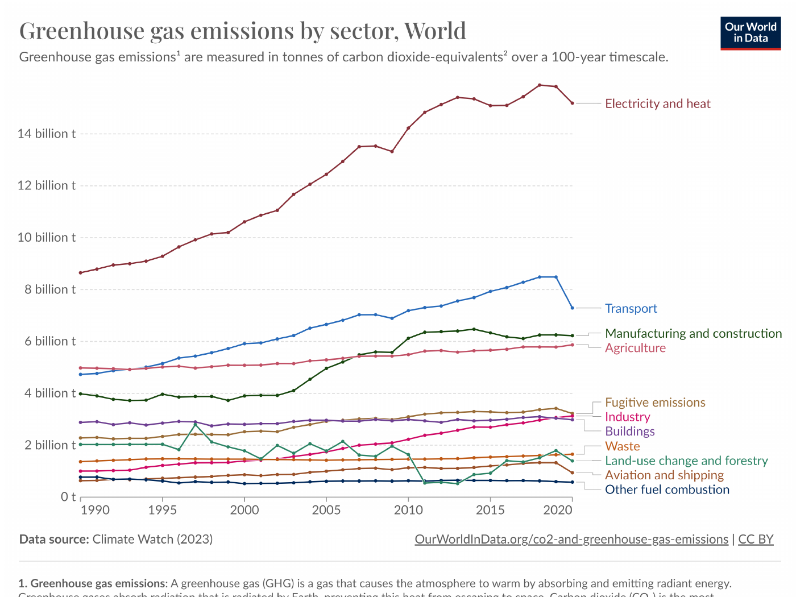

Convert carbon quantities and audit stocks, flows and emissions charts
Explanation, worked examples and practice
Useful first: Interpret harvest and waste capacity comparisons, Interpret concentration and temperature records with dates and baselines
Outcome and conditions
Apply carbon/CO2price and mass conversions, stated historical GWPweights, stock-flow accounting and population/chart boundaries; retain voluntary-reading status. All essential components listed in metadata are required. Hypothetical assessment values instantiate the checked equations; they are not historical observations or observed outcomes. Independent checks are closed-note and without hints, solution access, external retrieval or other assistance; a basic arithmetic calculator is allowed. Teach establishes and records actual help/exposure conditions before claiming independence.
Prerequisites and checks
Check the prerequisites
- O003 outcome and repair route: compatible rate/stock boundaries are prerequisites for interpreting net atmospheric additions.
- O017 outcome and repair route: concentration/averaging distinctions prevent emissions charts being mistaken for atmospheric stock observations.
O018-P1, item_version 1, prerequisite_diagnostic. Prompt: Does a renewable label prove harvest is sustainable without comparing same-interval growth? Is ppm concentration automatically a tonnes-per-year flow?
Complete key and rubric: No to both: harvest and yield need a comparable interval and net balance; ppm is an atmospheric fraction/stock measure, not an emissions flow. Require both; repair O003 capacity/rate comparison and O017 concentration definitions. Pass requires every requested reason and result; partial for an omitted reason or unresolved isolated arithmetic slip; fail for the conflicting mechanism. This diagnostic never counts as acquisition. Current or explicitly compatible committed independent prerequisite evidence may permit skipping its check; familiarity alone cannot. Use the cited complete prerequisite lesson or the named included foundation, then the worked example, after a partial/failing entry check.
Motivation, intuition, and definitions
Apply carbon/CO2price and mass conversions, stated historical GWPweights, stock-flow accounting and population/chart boundaries; retain voluntary-reading status. Establish the definitions, assumptions and relevant comparisons before simplifying an equation. The complete reused passages establish every academic claim, notation choice and qualification assessed here; necessary prerequisites use the complete lessons above.
Explanation steps
Source passage
Origin: reused complete checked passage Carbon units, stocks, flows and emissions charts; fingerprint 53486825eda1979d271237a20403c33c1e0ba9e54a5c9ef0191ae8468ecb2b9d. Heading depth alone is adapted.
Carbon units, stocks, flows and emissions charts
Which quantities can be compared when a chart says carbon, CO2, CO2-equivalent, concentration or per person? The optional-reading section supplies unit conversions and charts. Reading their units and boundaries is a foundation for both climate-policy comparisons and monetary costs per tonne. These pages are included because they are inside the selected supplied document, while retaining their “Voluntary readings” status. 02_AQImp-ClimateChange.pdf, physical PDF p. 46–58

The map follows pp. 47–58 and uses p. 26's GWP definition to separate mass conversion from warming equivalence. 02_AQImp-ClimateChange.pdf, physical PDF p. 26, 47–58
Carbon mass and the inverse price conversion
A tonne of carbon (t C) measures carbon atoms; a tonne of CO2 measures the whole molecule. Using source atomic masses 12 for C and 16 for O, molecular mass is \(12+2(16)=44\). Therefore
For the same total payment, multiplying mass by \(44/12\) requires dividing price per mass by \(44/12\). Thus
Confusing quantity conversion with price conversion reverses the comparison. Neither operation is a GWP conversion for methane or other gases. 02_AQImp-ClimateChange.pdf, physical PDF p. 48
GWP and CO2-equivalent emissions
Global warming potential (GWP) compares the time-integrated radiative effect of a pulse mass of gas with an equal mass of CO2 over a stated horizon; CO2's value is one by definition. For a chosen metric, horizon and assessment,
where \(m_g\) is emitted mass of gas \(g\). This is agent-expanded notation for the source's examples, not a new emissions estimate. A million tonnes of \(\mathrm{CH}_4\) at \(\mathrm{GWP}_{100}=25\) becomes \(25\) million tonnes \(\mathrm{CO}_2\mathrm{e}\); a million tonnes of \(\mathrm{N}_2\mathrm{O}\) at \(298\) becomes \(298\) million tonnes \(\mathrm{CO}_2\mathrm{e}\). 02_AQImp-ClimateChange.pdf, physical PDF p. 25–26, 53
The p. 26 table explicitly identifies IPCC AR4 (2007) values; retain that vintage. Its complete entries are:
| Gas | Lifetime, years | GWP20 | GWP100 | GWP500 |
|---|---|---|---|---|
| CH4 | 12 | 72 | 25 | 7.6 |
| N2O | 114 | 289 | 298 | 153 |
| HFC-23 | 270 | 12000 | 14800 | 12200 |
| HFC-134a | 14 | 3830 | 1430 | 425 |
| SF6 | 3200 | 16300 | 22800 | 32600 |
These are the supplied historical values, not current universal constants or evidence that later charts use exactly the same assessment. A CO2e label needs its horizon and metric convention for exact comparison. 02_AQImp-ClimateChange.pdf, physical PDF p. 26
Trace-gas concentration and AGGI
Physical p. 47 uses ppm for CO2, ppb for CH4/N2O and ppt for halocarbons. Each panel has its own scale. The historical plots show rising CO2, CH4 and N2O, peaking/declining CFC-11/CFC-12, and rising HCFC-22/HFC-134a over their displayed period ending around 2020. Heights across separate axes are not direct abundance comparisons. 02_AQImp-ClimateChange.pdf, physical PDF p. 47
Physical p. 49 contrasts CO2-alone concentration with a CO2-equivalent mixing ratio obtained by matching forcing from long-lived gases, and a separate AGGI right axis. This equivalent concentration is not a sum of GWP-weighted emission tonnes. The slide does not explain AGGI's baseline. Supplementary definition: NOAA defines AGGI as long-lived-gas effective radiative forcing relative to its 1990 value, making 1990 equal one. It is a forcing ratio, not an emissions flow or forecast. NOAA AGGI, Introduction. 02_AQImp-ClimateChange.pdf, physical PDF p. 49
Why a stable flow can increase an atmospheric stock
Concentration measures an atmospheric stock; emissions add mass per unit time and sinks remove it. A simple agent synthesis of this accounting is
where \(A_t\) is atmospheric mass, \(E_t\) emissions and \(R_t\) net removal over the same interval, all in compatible mass units. A constant positive emission flow still increases \(A\) whenever \(E_t>R_t\). Stabilizing emissions differs from bringing net additions to zero. Connecting mass to ppm requires an atmospheric-mass conversion, which the source does not supply. 02_AQImp-ClimateChange.pdf, physical PDF p. 50–51
Physical p. 50 uses separate axes for concentration (ppm) and annual emissions (gigatonnes). Its 1751–2022 graph and caption's historical increase from about 5 Gt/year in the mid twentieth century to over 35 Gt/year illustrate different quantities, not a fitted causal coefficient. Physical p. 51 draws a flat emission line and rising concentration curve on uncalibrated x1–x20 axes with no dates, units or source. Its curved stock path does not follow from constant net additions alone, which would give a linear stock rise. Use it for stock-flow intuition, not a quantitative carbon-cycle law. NOAA's atmospheric-CO2 article independently explains that emissions exceeding sinks raise atmospheric abundance: “Fossil fuels overwhelm Earth's natural carbon cycle”. 02_AQImp-ClimateChange.pdf, physical PDF p. 50–51
Sector quantities: gas and denominator first
Physical p. 52 is 2020 world per-capita CO2, with these displayed sector values in tonnes per person for the reported year: electricity/heat 1.93, transport 0.91, manufacturing/construction 0.79, buildings 0.35, industry 0.21, land-use/forestry 0.15, aviation/shipping 0.12 and fugitive emissions 0.03. It credits Climate Watch (2023) and population sources (2023). It is not an all-gas CO2e total, and no finer time aggregation is supplied. 02_AQImp-ClimateChange.pdf, physical PDF p. 52
Physical p. 53 instead shows CH4 and N2O in CO2e, roughly 1990–2021, with a GWP100 footnote. Agriculture is largest in each panel; methane also has substantial fugitive and waste emissions. The other methane series are land-use/forestry, other fuel combustion and industry; the other N2O series are industry, waste, land-use/forestry, fugitive and other fuel combustion. The panels have different scales, so their line heights do not directly compare gas mass. 02_AQImp-ClimateChange.pdf, physical PDF p. 53
Physical p. 54 combines all-gas CO2e by sector: electricity/heat, transport, manufacturing/construction, agriculture, fugitive emissions, industry, buildings, waste, land-use/forestry, aviation/shipping and other fuel combustion. Its source is Climate Watch (2023). End-period downturns in some historical series do not establish a permanent future trend. Exact comparison with the AR4 table requires checking the chart dataset's assessment convention, which the slide does not establish. 02_AQImp-ClimateChange.pdf, physical PDF p. 54

The complete graphic preserves each sector and its 100-year CO2e qualification. 02_AQImp-ClimateChange.pdf, physical PDF p. 54
Per person, population and totals
Physical p. 55 encodes per-person emissions by rectangle height, population by width, and total emissions by area. A populous country can have a large area but lower per-person emissions than a small country. Labels emphasize countries with large totals rather than a complete per-capita ranking. Its title says CO2 but the vertical axis says tCO2e, so the supplied graphic leaves the gas/metric boundary ambiguous; do not silently treat the two labels as interchangeable. The illustration lacks a clear data-year citation and is not a current league table. 02_AQImp-ClimateChange.pdf, physical PDF p. 55
The p. 56 map reports 2020 total GHG CO2e per person including land-use/forestry, credits Climate Watch (2023), and has a negative legend range and hatched “no data.” The p. 57 map reports 2021 CO2/CH4/N2O in GWP100 CO2e including land-use, credits Jones et al. (2023), and notes that land-use emissions can be negative. Different years, sources and gas/boundary labels mean their visual differences cannot be read as one harmonized annual change. Negative net land-use emissions and missing data are different categories: hatching is not zero emissions. 02_AQImp-ClimateChange.pdf, physical PDF p. 56–57
Physical p. 58 compares 2018 CO2 per person with GDP per person in 2011 international dollars adjusted for purchasing power and inflation. Its GDP axis is logarithmic ($1000, $2000, $5000, $10000, $20000, $50000), so equal plot distances are not equal dollar increments. Emissions cover fossil fuels and cement, explicitly excluding land-use change. The positive cross-country association has considerable variation and does not identify a causal effect of income. Sources are the Global Carbon Project and Maddison Project Database 2020 (Bolt and van Zanden, 2020). 02_AQImp-ClimateChange.pdf, physical PDF p. 58
Unit consistency, stock-flow accounting and total-versus-per-person denominators are core foundations because they unlock these comparisons. Historical charts remain context; none is relabeled as current or used as an unqualified causal estimate. 02_AQImp-ClimateChange.pdf, physical PDF p. 47–58
Worked example
O018-W1, item_version 1, worked_example. Prompt: Use a declared hypothetical inventory with \(12\ \mathrm{tC}\) and price \(p_C=100\ \mathrm{currency\ units/tC}\). Convert mass and the price for the same total payment into tCO2 and price/tCO2. For separate emissions of 1 t CH4 and 0.5 t N2O, use the explicitly historical AR4 GWP100 factors 25 and 298 to compute tCO2e and distinguish it from CO2-equivalent atmospheric concentration/AGGI. With atmospheric mass \(A_t=100\), emissions \(10\) and removals \(6\) in common mass units over one interval, compute \(A_{t+1}\) and explain stable-flow versus stable-stock claims and missing ppm conversion. Country A has 5 t CO2e/person and population 2 million, countryB 10 t CO2e/person and 0.5 million: compute totals and interpret rectangle height/width/area. State the necessary chart year/gas/horizon/boundary/log-axis/missing-data cautions and optional-reading status.
Complete solution and essential rubric: Mass scales as \(m_{CO_2}=m_C(44/12)=44.00000000\ \mathrm{tCO_2}\), while the equal-payment unit price scales inversely, \(p_{CO_2}=p_C(12/44)=27.27272727\) currency units/tCO2. Both products give the same total \(1200.00000000\) currency units. This molecular-mass conversion is not methane GWP. Historical AR4 GWP100 gives \(E_{CO_2e}=1(25)+0.5(298)=174.00000000\) t CO2e; horizon/assessment must be declared, not treated as current universal constants. A forcing-equivalent atmospheric mixing ratio is another quantity; AGGI is an index of long-lived-gas forcing normalized to 1 in the base year 1990, not emitted tonnes. Stock accounting gives \(A_{t+1}=A_t+E_t-R_t=104.00000000\); a stable positive gross flow grows the stock whenever emissions exceed removals. Constant net additions imply a linear stock increase, not the source’s uncalibrated curved law; mass-to-ppm conversion is absent. Country totals are \(10.00000000\) and \(5.00000000\) million tonnes: height is per person, width population, area total; a higher per-person value need not imply larger total. Exact comparisons require common year/source/gas boundaries (CO2 versus all-gas CO2e, land-use inclusion), metric horizon and vintage. The source title/axis CO2/CO2e conflict is unresolved; negative net land-use is not missing/hatched data. A logarithmic PPP income axis has unequal dollar increments and cross-country association is not causation. Pages 47–58 remain voluntary supporting material within supplied scope, not a claimed mandatory exam list. All requested calculations, derivations and qualifications are essential; the component map above applies to every full form.
Practice with fading assistance
Write your reasoning, then reveal the complete key to check each step.
A local draft for your own study.
Reveal explanation
Complete solution and essential rubric: Mass scales as \(m_{CO_2}=m_C(44/12)=22.00000000\ \mathrm{tCO_2}\), while the equal-payment unit price scales inversely, \(p_{CO_2}=p_C(12/44)=32.72727273\) currency units/tCO2. Both products give the same total \(720.00000000\) currency units. This molecular-mass conversion is not methane GWP. Historical AR4 GWP100 gives \(E_{CO_2e}=2(25)+0.25(298)=124.50000000\) t CO2e; horizon/assessment must be declared, not treated as current universal constants. A forcing-equivalent atmospheric mixing ratio is another quantity; AGGI is an index of long-lived-gas forcing normalized to 1 in the base year 1990, not emitted tonnes. Stock accounting gives \(A_{t+1}=A_t+E_t-R_t=203.00000000\); a stable positive gross flow grows the stock whenever emissions exceed removals. Constant net additions imply a linear stock increase, not the source’s uncalibrated curved law; mass-to-ppm conversion is absent. Country totals are \(12.00000000\) and \(8.00000000\) million tonnes: height is per person, width population, area total; a higher per-person value need not imply larger total. Exact comparisons require common year/source/gas boundaries (CO2 versus all-gas CO2e, land-use inclusion), metric horizon and vintage. The source title/axis CO2/CO2e conflict is unresolved; negative net land-use is not missing/hatched data. A logarithmic PPP income axis has unequal dollar increments and cross-country association is not causation. Pages 47–58 remain voluntary supporting material within supplied scope, not a claimed mandatory exam list. All requested calculations, derivations and qualifications are essential; the component map above applies to every full form.
Allowed support is the first stated identity only; hide the remaining key while the learner completes it. Supported performance is practice, not an independent result.
Rubric and independence
Self-assessment criteria and tutor checks
Required components: mass_price_and_gwp_unit_conversions, stock_flow_forcing_and_concentration_distinctions, population_total_and_chart_boundary_audit. Each full prompt/key below elicits every component; all are necessary for a pass on every permitted pair. Accept algebraically equivalent expressions and clearly defined opposite cash-flow signs with correct interpretation. A pass requires all requested outputs/reasons, correct units/assumptions and no critical conceptual error. Partial means a missing component or an unresolved isolated arithmetic slip with an otherwise valid method; independent correction is required for a pass. Fail means a critical mechanism/condition is wrong. Unscorable means a response or its help/exposure conditions cannot be established. Unknown help conditions are never independent evidence.
Critical errors: Price scaled in same direction as mass for equal payment; tonnesCO2econfused with forcing-equivalent concentration; stable gross emission flow equated with stable stock; missing data treated as zero; mixed chart boundaries treated as causal annual change.
Acquisition requires two distinct unused unassisted full checks selected from the six exact metadata routes. Every I/D form covers all components; W1, S1, the prerequisite and C1 are forbidden substitutes. A D form used for acquisition cannot later be counted again as delayed success. No teach-generated item may replace a named full check; additional verified explanation/practice is allowed under the unchanged method and may not fabricate evidence. If fewer than two fresh forms remain for acquisition, return a plan_issue for an additional prepared bank.
| Component | I1 | I2 | D1 | D2 |
|---|---|---|---|---|
| mass_price_and_gwp_unit_conversions | required | required | required | required |
| stock_flow_forcing_and_concentration_distinctions | required | required | required | required |
| population_total_and_chart_boundary_audit | required | required | required | required |
Misconceptions and correction
An observed omitted term/sign is tentative until the learner explains it; compare the reasoning with the critical errors above. Score the original response before providing help. Route a conceptual failure to the relevant included derivation and prerequisite, then use an unused full form.
O018-C1, item_version 1, narrow_correction. Prompt: Mass in t CO2 is 44/12 times mass in t C. To preserve the same payment, does price per t CO2 also multiply by 44/12? Key/rubric: No. It divides by 44/12, or multiplies by 12/44; quantity times unit price must remain the same. This is molecular mass accounting, not another gas’s GWP. Pass requires all keyed reasoning; partial for a missing part; fail for the conflicting mechanism. This repairs a common inference only; it cannot substitute for a full numerical/capability check.
Give at most two hints (first identify the date/unit, second point to the included identity); after ineffective hints show the relevant worked step. After two unsuccessful independent attempts stop repeated quizzing, revisit the explanation/prerequisite and preserve the unresolved status.
Immediate and delayed checks
Write your reasoning, then reveal the complete key to check each step.
A local draft for your own study.
Reveal explanation
Complete solution and essential rubric: Mass scales as \(m_{CO_2}=m_C(44/12)=33.00000000\ \mathrm{tCO_2}\), while the equal-payment unit price scales inversely, \(p_{CO_2}=p_C(12/44)=21.81818182\) currency units/tCO2. Both products give the same total \(720.00000000\) currency units. This molecular-mass conversion is not methane GWP. Historical AR4 GWP100 gives \(E_{CO_2e}=1.5(25)+0.2(298)=97.10000000\) t CO2e; horizon/assessment must be declared, not treated as current universal constants. A forcing-equivalent atmospheric mixing ratio is another quantity; AGGI is an index of long-lived-gas forcing normalized to 1 in the base year 1990, not emitted tonnes. Stock accounting gives \(A_{t+1}=A_t+E_t-R_t=155.00000000\); a stable positive gross flow grows the stock whenever emissions exceed removals. Constant net additions imply a linear stock increase, not the source’s uncalibrated curved law; mass-to-ppm conversion is absent. Country totals are \(15.00000000\) and \(8.40000000\) million tonnes: height is per person, width population, area total; a higher per-person value need not imply larger total. Exact comparisons require common year/source/gas boundaries (CO2 versus all-gas CO2e, land-use inclusion), metric horizon and vintage. The source title/axis CO2/CO2e conflict is unresolved; negative net land-use is not missing/hatched data. A logarithmic PPP income axis has unequal dollar increments and cross-country association is not causation. Pages 47–58 remain voluntary supporting material within supplied scope, not a claimed mandatory exam list. All requested calculations, derivations and qualifications are essential; the component map above applies to every full form.
I1/I2 are immediate checks; D1/D2 are distinct parallel variants reserved where possible for delayed checks. A delayed success requires an unused form before recap, no help/solution access, and at least 24 actual elapsed hours after acquisition and the most recent relevant teaching/solution exposure. Record intervening exposure. A calendar-date change alone is insufficient; an early D attempt is immediate evidence only.
A local draft for your own study.
Reveal explanation
Complete solution and essential rubric: Mass scales as \(m_{CO_2}=m_C(44/12)=55.00000000\ \mathrm{tCO_2}\), while the equal-payment unit price scales inversely, \(p_{CO_2}=p_C(12/44)=38.18181818\) currency units/tCO2. Both products give the same total \(2100.00000000\) currency units. This molecular-mass conversion is not methane GWP. Historical AR4 GWP100 gives \(E_{CO_2e}=0.8(25)+0.4(298)=139.20000000\) t CO2e; horizon/assessment must be declared, not treated as current universal constants. A forcing-equivalent atmospheric mixing ratio is another quantity; AGGI is an index of long-lived-gas forcing normalized to 1 in the base year 1990, not emitted tonnes. Stock accounting gives \(A_{t+1}=A_t+E_t-R_t=255.00000000\); a stable positive gross flow grows the stock whenever emissions exceed removals. Constant net additions imply a linear stock increase, not the source’s uncalibrated curved law; mass-to-ppm conversion is absent. Country totals are \(15.00000000\) and \(9.00000000\) million tonnes: height is per person, width population, area total; a higher per-person value need not imply larger total. Exact comparisons require common year/source/gas boundaries (CO2 versus all-gas CO2e, land-use inclusion), metric horizon and vintage. The source title/axis CO2/CO2e conflict is unresolved; negative net land-use is not missing/hatched data. A logarithmic PPP income axis has unequal dollar increments and cross-country association is not causation. Pages 47–58 remain voluntary supporting material within supplied scope, not a claimed mandatory exam list. All requested calculations, derivations and qualifications are essential; the component map above applies to every full form.
A local draft for your own study.
Reveal explanation
Complete solution and essential rubric: Mass scales as \(m_{CO_2}=m_C(44/12)=11.00000000\ \mathrm{tCO_2}\), while the equal-payment unit price scales inversely, \(p_{CO_2}=p_C(12/44)=43.63636364\) currency units/tCO2. Both products give the same total \(480.00000000\) currency units. This molecular-mass conversion is not methane GWP. Historical AR4 GWP100 gives \(E_{CO_2e}=2.5(25)+0.1(298)=92.30000000\) t CO2e; horizon/assessment must be declared, not treated as current universal constants. A forcing-equivalent atmospheric mixing ratio is another quantity; AGGI is an index of long-lived-gas forcing normalized to 1 in the base year 1990, not emitted tonnes. Stock accounting gives \(A_{t+1}=A_t+E_t-R_t=183.00000000\); a stable positive gross flow grows the stock whenever emissions exceed removals. Constant net additions imply a linear stock increase, not the source’s uncalibrated curved law; mass-to-ppm conversion is absent. Country totals are \(10.50000000\) and \(5.60000000\) million tonnes: height is per person, width population, area total; a higher per-person value need not imply larger total. Exact comparisons require common year/source/gas boundaries (CO2 versus all-gas CO2e, land-use inclusion), metric horizon and vintage. The source title/axis CO2/CO2e conflict is unresolved; negative net land-use is not missing/hatched data. A logarithmic PPP income axis has unequal dollar increments and cross-country association is not causation. Pages 47–58 remain voluntary supporting material within supplied scope, not a claimed mandatory exam list. All requested calculations, derivations and qualifications are essential; the component map above applies to every full form.
A local draft for your own study.
Reveal explanation
Complete solution and essential rubric: Mass scales as \(m_{CO_2}=m_C(44/12)=66.00000000\ \mathrm{tCO_2}\), while the equal-payment unit price scales inversely, \(p_{CO_2}=p_C(12/44)=16.36363636\) currency units/tCO2. Both products give the same total \(1080.00000000\) currency units. This molecular-mass conversion is not methane GWP. Historical AR4 GWP100 gives \(E_{CO_2e}=1.2(25)+0.3(298)=119.40000000\) t CO2e; horizon/assessment must be declared, not treated as current universal constants. A forcing-equivalent atmospheric mixing ratio is another quantity; AGGI is an index of long-lived-gas forcing normalized to 1 in the base year 1990, not emitted tonnes. Stock accounting gives \(A_{t+1}=A_t+E_t-R_t=305.00000000\); a stable positive gross flow grows the stock whenever emissions exceed removals. Constant net additions imply a linear stock increase, not the source’s uncalibrated curved law; mass-to-ppm conversion is absent. Country totals are \(18.00000000\) and \(10.80000000\) million tonnes: height is per person, width population, area total; a higher per-person value need not imply larger total. Exact comparisons require common year/source/gas boundaries (CO2 versus all-gas CO2e, land-use inclusion), metric horizon and vintage. The source title/axis CO2/CO2e conflict is unresolved; negative net land-use is not missing/hatched data. A logarithmic PPP income axis has unequal dollar increments and cross-country association is not causation. Pages 47–58 remain voluntary supporting material within supplied scope, not a claimed mandatory exam list. All requested calculations, derivations and qualifications are essential; the component map above applies to every full form.
Content provenance and generation boundaries
Sources and scope
Explanations, figures and qualifications above reuse complete checked-note sections with exact origin/fingerprint; heading depth alone is adapted. Main exercises and worked arithmetic are plan-created hypothetical instantiations of those displayed identities. No additional academic claims or external course scope are introduced. Preserve the note conventions and explicit qualifications; checked references reused from notes are not an independent raw-source audit by plan. New numerical practice can use the same method only after its complete solution and unchanged components are checked before display; it cannot replace this lesson’s named evidence forms. Prerequisites route to the complete prepared lessons above.